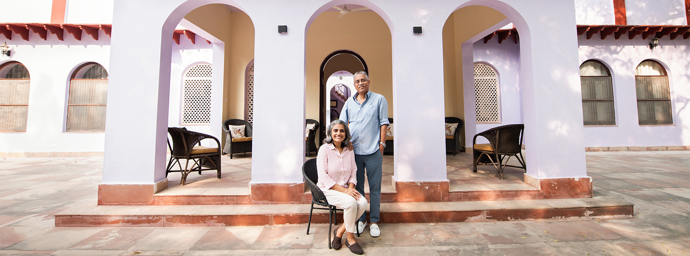

CHAMBAL, UTTAR PRADESH
CHAMBAL, UTTAR PRADESH EXPERIENCE
EXPERIENCE THE CHAMBAL CONSERVATION FOUNDATION
We run the Chambal Conservation Foundation with our own funds and are committed to protecting the pristine environment of the Chambal valley.
Our sustainable practices are focused on:...read more 
The Natural & Cultural Heritage
Reforestation & Habitat Regeneration
- Large numbers of indigenous trees and shrubs are planted every year to supplement the existing growth and to create a nature reserve that is being progressively allowed to regenerate itself, untouched by human interference. The results of our efforts can be judged by the fact that the Lodge area now boasts of a checklist of over 198 species of birds, reptiles and mammals.
- 6 acres of our land were dedicated to develop a Forest nursery to supply reforestation drives from 2006-2015.
- In July 2007, participated in UP Government Plantation Drive and successfully planted 10,000 saplings with the help of over 100 local participants.
- Have helped create check-dams in the ravines and also created large ponds for collecting and storing rainwater in and around the Lodge area, for recharging groundwater reservoirs.
Conservation
- Working with the Forest Department to help establish and revive the eco-development schemes for exploring avenues of employment and economic benefit for the local populace to ensure their greater participation in the conservation and protection efforts.
- The Heritage Management Plan for Bateshwar has been submitted and work is expected to commence in the coming months. The management plan will help in the sustainable development, management, and restoration of this historic site.
- Consulted and assisted in the organization of International Sarus Crane Workshop 2016.
- In March 2008, conducted a socio-economic survey covering 195 villages inside the Chambal sanctuary.
- In order to reduce dependence on the Sanctuary and provide direct benefits to the local populace, we have provided technical inputs to Forest range offices for rainwater harvesting projects at Nandgaon and Jhirnapura in Bah Range.
- Actively assisting the Gharial Crisis Management Group and WWF at the field level since the Gharial crisis in December 2007.
- Working with WWF for preparation of Chambal river basin management plan.
- Every year identify and provide protective covers for the nesting sites of the Gharials and Muggers.
- Instrumental in initiating the process of restoration of the Ater Fort that lies on the fringes of the Sanctuary.
Education & Awareness
- The Foundation works in close collaboration with the Forest Department and the local communities to help strike a balance between ostensibly divergent needs, by organizing awareness camps and interactive meetings.
- Every year in October, the Foundation organises a Wildlife Conservation Week, to create awareness and generate interest amongst school children. Close to 20,000 children from Agra and from rural schools near the Sanctuary have participated in events since 2006, which included talks, essay and quiz competitions, and visits to protected areas near Agra, including the National Chambal Sanctuary.
- In October 2016, a special event ‘Cycling for the Environment’ has been planned to increase the outreach of the International Wildlife Week to 7 cities of Uttar Pradesh.
Research & Data Compilation
- Participate and host the census team members, every year, for the annual census of the National Chambal Sanctuary (NCS) carried out jointly by the Forest Department and WWF.
- In 2012 & 2015 participated in and contributed towards the statewide Dolphin Census conducted under the stewardship of WWF, and the Uttar Pradesh Forest Department, across 3000 km of the River.
- Provide logistical and backup support to research students working on projects related to the NCS.
- A detailed scientific listing of all the birds, mammals and reptiles sighted in the Chambal Valley has been compiled with the assistance of both amateur birders and ornithologists of international repute over a period of several years of extensive research and is revised and updated each year.
- The process of listing the flora of the Chambal Valley has been initiated.
- Regularly provide information on the status of the wildlife in the Sanctuary to International and National organizations, including WWF, BNHS, OBC, Ministry of Environment and Forests.
- In 2006, worked with the Vulture project of Peregrine fund of USA towards identifying vulture nests in the Chambal valley.
- Participated in the Yamuna bird count 2005 to learn the methodology to carry out similar activities in the National Chambal Sanctuary.
- Designed the official information website for the National Chambal Sanctuary Project which also includes the Sur Sarovar, Patna, Saman and Okhla Bird Sanctuaries.
Direct Action
- Work in tandem with the Forest Department and The Ministry of Environment and Forests to raise issues of concern and provide up-to-date data and information on the sanctuary.
- Actively involved in developing the eco-tourism policy for Uttar Pradesh and guidelines for carrying capacity for tourism purposes for all Sanctuaries and National Parks in Uttar Pradesh.
- Our boats are also used for patrolling, anti-poaching, anti-sand mining and data gathering activities.
- Led a sustained campaign and have been instrumental in having a check-post built at the road head into the NCS at Nandgaon, helping to substantially lower poaching and eliminate sand-mining operations.
- In 2009 donated a boat to the Forest Department for their anti-poaching and monitoring efforts.
- Since 2009, have funded the fuel requirements for the Forest Departments anti-poaching and monitoring drives.
- To promote eco-tourism in other centres near Agra, in 2009 donated Bicycles for visitors to the Sur Sarovar Bird Sanctuary.
The Community
The Local Community
Employment & Livelihoods
- A majority of our team members belong to the local community, or are from the regions in and around Chambal.
- In order to increase local participation in eco-tourism related activities, exploratory interactive walks, conducted by local villagers, through the medieval village of Holipura, have been initiated. We hope to include refreshments/meals prepared by the villagers as part of the experience in the coming season.
- To generate further employment opportunities for the community, we are working on a project to use local waste products (rags, paper, agricultural waste) to manufacture handmade paper/generate clean power.
- Great care has been taken to use indigenous materials and craftsmen. The furnishings are procured locally and showcase crafts and skills honed over generations.
- Most of the produce used in the Lodge Kitchens is from our own farms or procured directly from the local farmers.
The Global Community
Eco-tourism to engage & educate
- Understanding and appreciation of the National Chambal Sanctuary by promoting eco-tourism, and environment awareness and conservation programmes in the areas around the Sanctuary. This effort has given a much-required boost not only to the resource conservation program of the sanctuary and its environs, but has also created a wellspring of goodwill amongst the local populace.
- Through sustained effort we have managed to place the hitherto unknown Chambal valley on to the international birding and wildlife map, sharing its wonders with the world and guaranteeing its continued protection. We have worked hard to ensure that all activity is sustainable and environmentally sound.
- The first UP Bird Festival, organized in collaboration with the UP Forest Department, was hosted at the Chambal Safari Lodge from the 4th-6th of December 2015, and the second edition from the 2nd-4th of December 2016. The event highlighted the unique biodiversity of Uttar Pradesh, and also served as an excellent platform for sensitizing the local community and reaching out to them as stakeholders in the conservation and protection story.
Highlights of the 2015 & 2016 UP Bird Festival:
- 29 International experts from 14 countries in 2015, and 40 international experts from 29 countries in 2016. 115 experts in 2015, and over 200 in 2016, including authors like Tim & Carol Inskipp, Dr. Pamela Rasmussen, Ben King, Bikram Grewal.
- Representatives of WWF, BNHS, Bird Life International, Wildlife SOS, Nature Conservation Fund, Turtle Survival Alliance, Katerniaghat Foundation, British Birdfair, CEE.
- Over 2000 visitors over the 3 day period, including 400+ school children from around a dozen schools from the local community and from Agra.
- Exhibition of more than 200 photographs and a dozen paintings contributed by over 30 photographers and artists.
- Live ringing demonstrations by experts from BNHS
- Daily environment and wildlife awareness workshops for school children conducted by CEE, and local NGO's.
- Interactive workshops, presentations, and talks by leading ornithologists, and researchers.
- Bird art demonstrations and workshops by artists Jackie Garner and Dr. Pete Marshal.
Advisory Positions held by Ram Pratap Singh
- Regional Convenor of INTACH (Indian National Trust for Art & Cultural Heritage), Agra Chapter, since 1999.
- Since 2002, member of advisory boards for the National Chambal Sanctuary, Sur Sarovar Bird Sanctuary, Okhla Bird Sanctuary and Patna Bird Sanctuary.
- Member of the River Watch group since 2006.
- Member of the Uttar Pradesh Tourism Promotion Board since 2014, and has assisted in formulating the many Tourism Policies of the state.
- Honorary Wildlife Warden for National Chambal Sanctuary
- Member State Wildlife Board since 2015
- Advisor Lion Safari Project, Etawah
- Advisor to the Uttar Pradesh Ministry of Environment & Forests.
